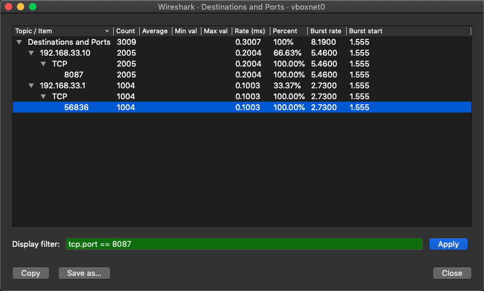
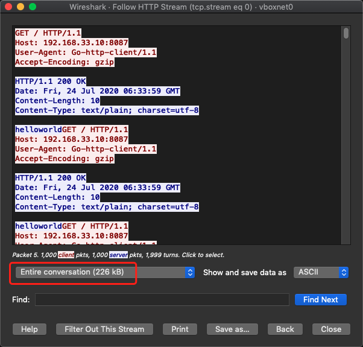
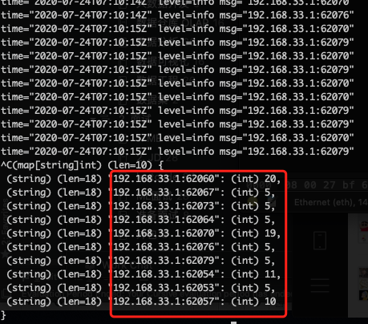
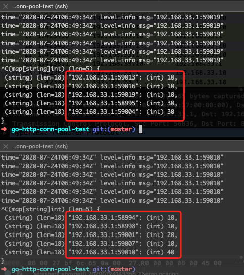
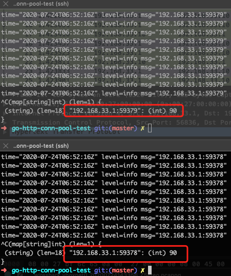
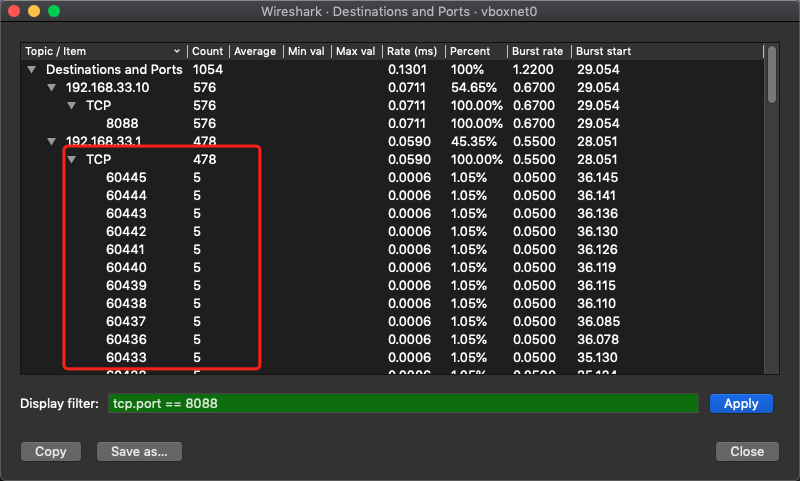

连接相对于其他对象，创建成本较高，资源也有限。如果没有连接池，在高并发场景下，连接关闭又新建，很快就会因为过多的TIME_WAIT（连接主动关闭方）导致无法创建更多连接了，程序被压死。
net/http 连接池参数
Go （测试版本 go 1.14）的net/http包是有连接池功能的，具体地，是 Transport 用于连接池化。
Transport is an implementation of RoundTripper that supports HTTP, HTTPS, and HTTP proxies (for either HTTP or HTTPS with CONNECT).
By default, Transport caches connections for future re-use.
// MaxIdleConns controls the maximum number of idle (keep-alive)
// connections across all hosts. Zero means no limit.
MaxIdleConns int
// MaxIdleConnsPerHost, if non-zero, controls the maximum idle
// (keep-alive) connections to keep per-host. If zero,
// DefaultMaxIdleConnsPerHost is used.
MaxIdleConnsPerHost int
// MaxConnsPerHost optionally limits the total number of
// connections per host, including connections in the dialing,
// active, and idle states. On limit violation, dials will block.
//
// Zero means no limit.
MaxConnsPerHost int
// IdleConnTimeout is the maximum amount of time an idle
// (keep-alive) connection will remain idle before closing
// itself.
// Zero means no limit.
IdleConnTimeout time.Duration
默认值
MaxIdleConns=100，MaxIdleConnsPerHost=2（=DefaultMaxIdleConnsPerHost），MaxConnsPerHost=0（不限制）。
// DefaultTransport is the default implementation of Transport and is
// used by DefaultClient. It establishes network connections as needed
// and caches them for reuse by subsequent calls. It uses HTTP proxies
// as directed by the $HTTP_PROXY and $NO_PROXY (or $http_proxy and
// $no_proxy) environment variables.
var DefaultTransport RoundTripper = &Transport{
Proxy: ProxyFromEnvironment,
DialContext: (&net.Dialer{
Timeout: 30 * time.Second,
KeepAlive: 30 * time.Second,
DualStack: true,
}).DialContext,
ForceAttemptHTTP2: true,
MaxIdleConns: 100,
IdleConnTimeout: 90 * time.Second,
TLSHandshakeTimeout: 10 * time.Second,
ExpectContinueTimeout: 1 * time.Second,
}
PerHost 的 Host 是 addr+port
单台服务器，多个端口的服务是不同的 Host。
// canonicalAddr returns url.Host but always with a ":port" suffix
func canonicalAddr(url *url.URL) string {
addr := url.Hostname()
if v, err := idnaASCII(addr); err == nil {
addr = v
}
port := url.Port()
if port == "" {
port = portMap[url.Scheme]
}
return net.JoinHostPort(addr, port)
}
参数试验
服务端准备工作
https://github.com/XUJiahua/go-http-conn-pool-test
# 长连接服务器 192.168.33.10:8087
go run main.go -port 8087
# 长连接服务器 192.168.33.10:8089
go run main.go -port 8089
# 短连接服务器 192.168.33.10:8088
python3 -m http.server 8088
MaxIdleConnsPerHost 控制单个Host的连接池大小
单个连接池数设置为1。设置 MaxConnsPerHost=MaxIdleConnsPerHost，保证连接都是长连接。方便抓包工具查看连接池的数量。
// 参数配置
var _httpCli = &http.Client{
Timeout: time.Duration(15) * time.Second,
Transport: &http.Transport{
MaxIdleConnsPerHost: 1,
MaxConnsPerHost: 1,
IdleConnTimeout: 90 * time.Second,
TLSHandshakeTimeout: 10 * time.Second,
ExpectContinueTimeout: 1 * time.Second,
},
}
// 测试
func TestLong(t *testing.T) {
go func() {
for i := 0; i < 1000; i++ {
go get("http://192.168.33.10:8087")
}
}()
time.Sleep(time.Second * 10)
}

连接复用的效果
一个连接顺序处理多个HTTP请求。Wireshark 展示。

MaxConnsPerHost 控制单个Host的最大连接总数
net/http包里没有全局性的连接总数限制参数。该值默认是0，也就是不限制，连接池里的连接能用就用，不能用创建新连接。无法进入连接池回收的短连接，被主动关闭。
如果不限制，直接 dialConn。如果限制，未达到限制，直接dialConn，计数+1；达到限制，进入等待队列中。
// queueForDial queues w to wait for permission to begin dialing.
// Once w receives permission to dial, it will do so in a separate goroutine.
func (t *Transport) queueForDial(w *wantConn) {
w.beforeDial()
if t.MaxConnsPerHost <= 0 {
go t.dialConnFor(w)
return
}
t.connsPerHostMu.Lock()
defer t.connsPerHostMu.Unlock()
if n := t.connsPerHost[w.key]; n < t.MaxConnsPerHost {
if t.connsPerHost == nil {
t.connsPerHost = make(map[connectMethodKey]int)
}
t.connsPerHost[w.key] = n + 1
go t.dialConnFor(w)
return
}
if t.connsPerHostWait == nil {
t.connsPerHostWait = make(map[connectMethodKey]wantConnQueue)
}
q := t.connsPerHostWait[w.key]
q.cleanFront()
q.pushBack(w)
t.connsPerHostWait[w.key] = q
}
如果计数-1，从等待队列中释放一个进行 dialConn。
// decConnsPerHost decrements the per-host connection count for key,
// which may in turn give a different waiting goroutine permission to dial.
func (t *Transport) decConnsPerHost(key connectMethodKey) {
if t.MaxConnsPerHost <= 0 {
return
}
t.connsPerHostMu.Lock()
defer t.connsPerHostMu.Unlock()
n := t.connsPerHost[key]
if n == 0 {
// Shouldn't happen, but if it does, the counting is buggy and could
// easily lead to a silent deadlock, so report the problem loudly.
panic("net/http: internal error: connCount underflow")
}
// Can we hand this count to a goroutine still waiting to dial?
// (Some goroutines on the wait list may have timed out or
// gotten a connection another way. If they're all gone,
// we don't want to kick off any spurious dial operations.)
if q := t.connsPerHostWait[key]; q.len() > 0 {
done := false
for q.len() > 0 {
w := q.popFront()
if w.waiting() {
go t.dialConnFor(w)
done = true
break
}
}
if q.len() == 0 {
delete(t.connsPerHostWait, key)
} else {
// q is a value (like a slice), so we have to store
// the updated q back into the map.
t.connsPerHostWait[key] = q
}
if done {
return
}
}
// Otherwise, decrement the recorded count.
if n--; n == 0 {
delete(t.connsPerHost, key)
} else {
t.connsPerHost[key] = n
}
}
试验：尝试连接池1，最大连接数2。
// 参数配置
var _httpCli = &http.Client{
Timeout: time.Duration(15) * time.Second,
Transport: &http.Transport{
MaxIdleConnsPerHost: 1,
MaxConnsPerHost: 2,
IdleConnTimeout: 90 * time.Second,
TLSHandshakeTimeout: 10 * time.Second,
ExpectContinueTimeout: 1 * time.Second,
},
}
// 测试
func TestLong(t *testing.T) {
go func() {
for i := 0; i < 100; i++ {
if i%10 == 0 {
time.Sleep(time.Second)
}
go get("http://192.168.33.10:8087")
}
}()
time.Sleep(time.Second * 10)
}
连接有重建的情况。

MaxIdleConns vs MaxIdleConnsPerHost 两个连接池
如下源码，先检查 PerHost 的池子有没有满，再检查总的池子有没有满。也就是说，MaxIdleConns设置不合理，会对MaxIdleConnsPerHost有影响。
// tryPutIdleConn adds pconn to the list of idle persistent connections awaiting
// a new request.
// If pconn is no longer needed or not in a good state, tryPutIdleConn returns
// an error explaining why it wasn't registered.
// tryPutIdleConn does not close pconn. Use putOrCloseIdleConn instead for that.
func (t *Transport) tryPutIdleConn(pconn *persistConn) error {
...
idles := t.idleConn[key]
if len(idles) >= t.maxIdleConnsPerHost() {
// 如果超过了maxIdleConnsPerHost，报连接太多，当前pconn被关掉。
return errTooManyIdleHost
}
for _, exist := range idles {
if exist == pconn {
log.Fatalf("dup idle pconn %p in freelist", pconn)
}
}
t.idleConn[key] = append(idles, pconn)
t.idleLRU.add(pconn)
if t.MaxIdleConns != 0 && t.idleLRU.len() > t.MaxIdleConns {
oldest := t.idleLRU.removeOldest()
// 如果超过了MaxIdleConns，杀掉老的idle connection
oldest.close(errTooManyIdle)
t.removeIdleConnLocked(oldest)
}
...
看看是否有影响，客户端同时连接两个Host。
// 参数配置
var _httpCli = &http.Client{
Timeout: time.Duration(15) * time.Second,
Transport: &http.Transport{
MaxIdleConns: 1,
MaxIdleConnsPerHost: 1,
MaxConnsPerHost: 1,
IdleConnTimeout: 90 * time.Second,
TLSHandshakeTimeout: 10 * time.Second,
ExpectContinueTimeout: 1 * time.Second,
},
}
// 测试
func TestLongLong(t *testing.T) {
go func() {
for i := 0; i < 100; i++ {
if i%10 == 0 {
time.Sleep(time.Second)
}
go get("http://192.168.33.10:8087")
}
}()
go func() {
for i := 0; i < 100; i++ {
if i%10 == 0 {
time.Sleep(time.Second)
}
go get("http://192.168.33.10:8089")
}
}()
time.Sleep(time.Second * 10)
}
结果反映，连接有不断重建的现象。

配置去除MaxIdleConns，不限制连接总池的大小：
// 参数配置
var _httpCli = &http.Client{
Timeout: time.Duration(15) * time.Second,
Transport: &http.Transport{
MaxIdleConnsPerHost: 1,
MaxConnsPerHost: 1,
IdleConnTimeout: 90 * time.Second,
TLSHandshakeTimeout: 10 * time.Second,
ExpectContinueTimeout: 1 * time.Second,
},
}
结果反映，对每个Host各自维持一个连接。

连接复用，客户端、服务端需同时支持
任何一方主动关闭连接，连接就无法复用。
// 参数配置
var _httpCli = &http.Client{
Timeout: time.Duration(15) * time.Second,
Transport: &http.Transport{
MaxIdleConnsPerHost: 1,
MaxConnsPerHost: 1,
IdleConnTimeout: 90 * time.Second,
TLSHandshakeTimeout: 10 * time.Second,
ExpectContinueTimeout: 1 * time.Second,
},
}
// 测试
func TestLongShort(t *testing.T) {
go func() {
for i := 0; i < 1000; i++ {
if i%10 == 0 {
time.Sleep(time.Second)
}
go get("http://192.168.33.10:8087")
}
}()
go func() {
for i := 0; i < 1000; i++ {
if i%10 == 0 {
time.Sleep(time.Second)
}
go get("http://192.168.33.10:8088")
}
}()
time.Sleep(time.Second * 10)
}
python server （python3 -m http.server 8088）会主动关闭连接，池化参数不生效，创建连接不止1个。作为对比，对于长连接服务，池化参数生效。

总结
服务间接口调用，维持稳定数量的长连接，对性能非常有帮助。
几个参数：
- MaxIdleConnsPerHost：优先设置这个，决定了对于单个Host需要维持的连接池大小。该值的合理确定，应该根据性能测试的结果调整。
- MaxIdleConns：客户端连接单个Host，不少于MaxIdleConnsPerHost大小，不然影响MaxIdleConnsPerHost控制的连接池；客户端连接 n 个Host，少于 n X MaxIdleConnsPerHost 会影响MaxIdleConnsPerHost控制的连接池（导致连接重建）。嫌麻烦，建议设置为0，不限制。
- MaxConnsPerHost：对于单个Host允许的最大连接数，包含IdleConns，所以一般大于等于MaxIdleConnsPerHost。设置为等于MaxIdleConnsPerHost，也就是尽可能复用连接池中的连接。另外设置过小，可能会导致并发下降，超过这个值会 block 请求，直到有空闲连接。（所以默认值是不限制的）
参考：
- Tuning the Go HTTP Client Settings for Load Testing http://tleyden.github.io/blog/2016/11/21/tuning-the-go-http-client-library-for-load-testing/
Last modified on 2020-07-23